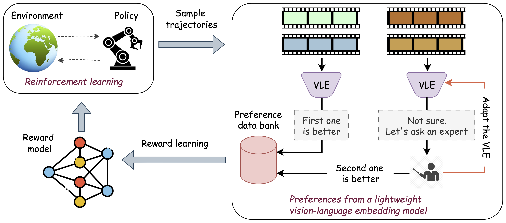
ROVED (Reducing Oracle Feedback with Vision-Language Embeddings) is a hybrid framework for preference-based reinforcement learning that combines scalable vision-language embedding (VLE) models with targeted oracle feedback. It works in two key stages:
1. VLE-based Preference Generation: The model uses lightweight VLE models to generate segment-level preferences for trajectory comparisons, providing a scalable alternative to expensive oracle annotations.
2. Selective Oracle Querying: Using a filtering mechanism with uncertainty thresholds (τupper and τlower), ROVED identifies noisy or uncertain samples and defers only these to the oracle for annotation, dramatically reducing annotation costs.
The framework also includes parameter-efficient fine-tuning that adapts the VLE using oracle feedback, creating a synergistic loop where the VLE improves over time. Across multiple robotic manipulation tasks, ROVED matches or surpasses prior methods while reducing oracle queries by up to 80% and achieving cumulative annotation savings of up to 90% through cross-task generalization.
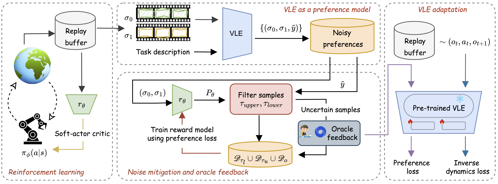
Overview: Given a task description, ROVED iteratively updates the policy πφ via reinforcement learning using the reward model rθ. Trajectory segments from the replay buffer are sampled and labeled with VLE-generated preferences. These samples are then classified as clean or noisy using thresholds τupper and τlower. A budgeted subset of noisy samples is sent for oracle annotation. The reward model is trained on both VLE and oracle-labeled preferences, while the VLE is fine-tuned using oracle annotations and replay buffer samples.
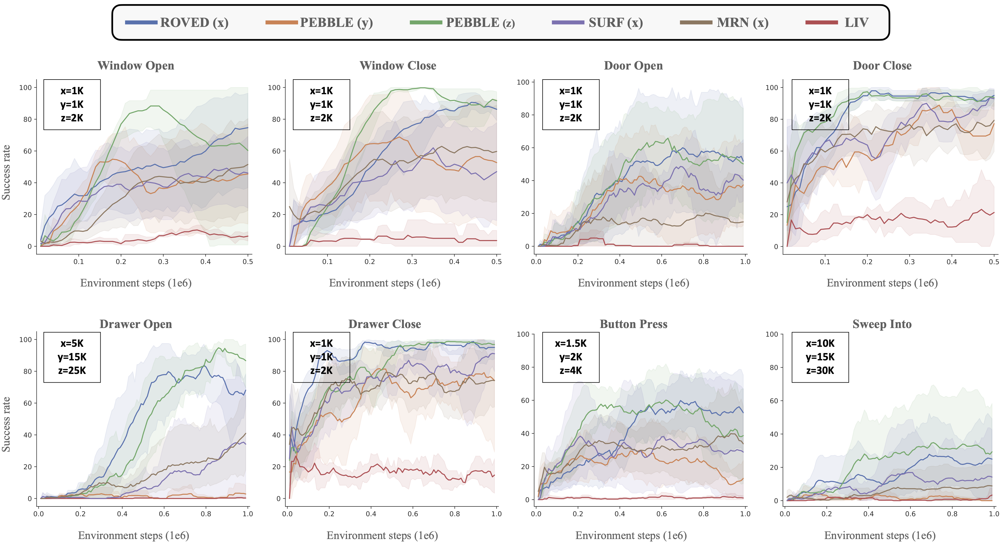
Improved feedback efficiency. ROVED consistently outperforms all baselines with minimal oracle feedback, matching or exceeding PEBBLE's performance while requiring 50%-80% fewer annotations. At equal preference counts, ROVED also outperforms efficient preference based methods like MRN and SURF. Variables (x, y, z) denote the number of oracle preferences used.
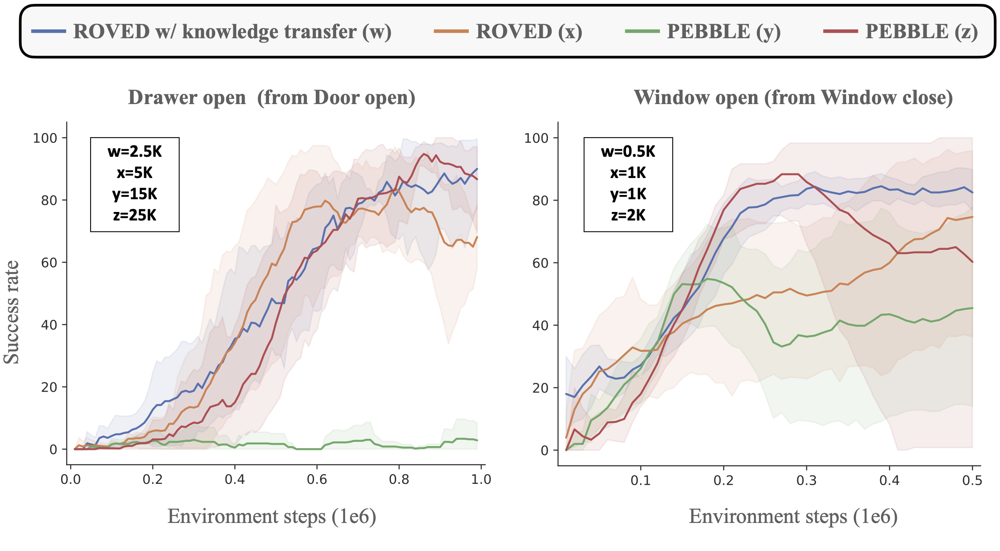
Knowledge transfer across tasks. A key objective of ROVED is to refine the VLE with oracle feedback to reduce inherent noise. We test whether an adapted VLE can generalize to related tasks with minimal additional supervision. Two types of transfer are considered: (1) same task, different object: "door-open" → "drawer-open"; (2) same object, different task: "window-close" → "window-open". In both cases, the VLE for the target task is initialized with weights from the source task, while the rest of the algorithm remains unchanged. With knowledge transfer, ROVED matches or surpasses PEBBLE while reducing annotation requirements by 75–90%. This demonstrates effective transfer in both same task, different object (left) and same object, different task (right) settings. Variables (w, x, y, z) denote the number of preferences used.
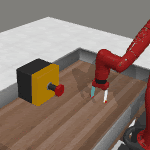
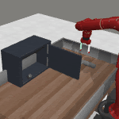
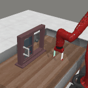
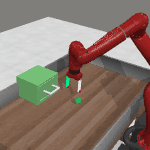
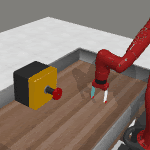
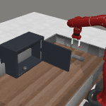
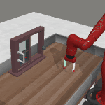
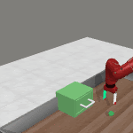
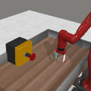
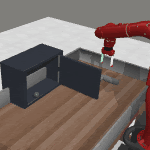
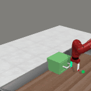
Qualitative comparison of learned policies. ROVED(x) matches the performance of PEBBLE(z) while using at least 50% fewer oracle queries (x < z). PEBBLE(y) policies are suboptimal despite achieving task success—either executing the task inefficiently (door-close) or requiring multiple attempts (button-press, window-close), where x < y < z. Here x, y, z denote the number of oracle preferences provided.
@inproceedings{ghosh2026reducingoraclefeedbackvisionlanguage,
title={Reducing Oracle Feedback with Vision-Language Embeddings for Preference-Based RL},
author={Udita Ghosh and Dripta S. Raychaudhuri and Jiachen Li and Konstantinos Karydis and Amit Roy-Chowdhury},
booktitle={IEEE International Conference on Robotics and Automation (ICRA)}
year={2026},
organization={IEEE}
}